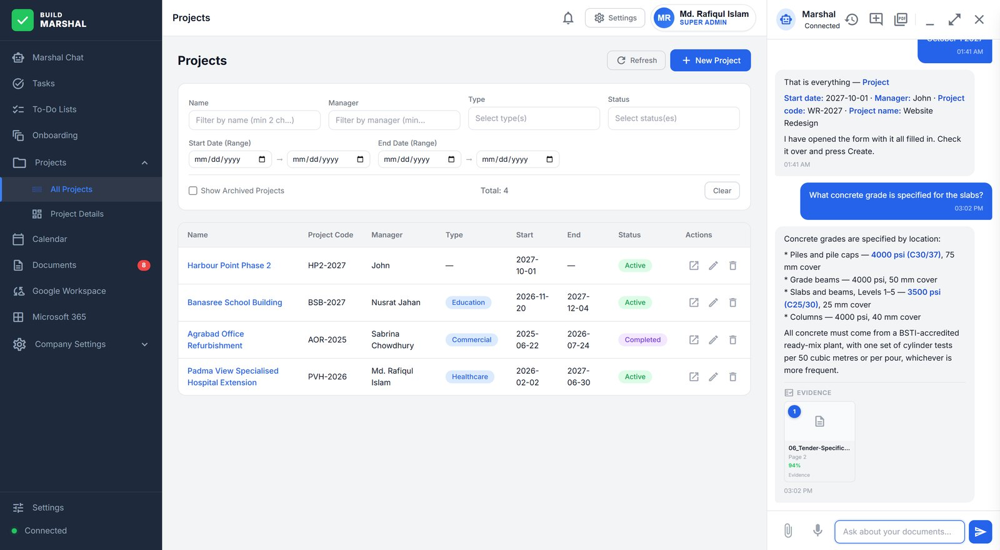
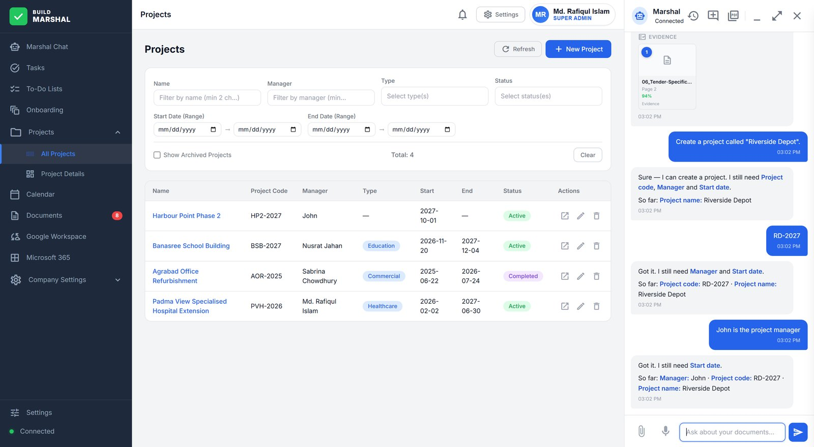
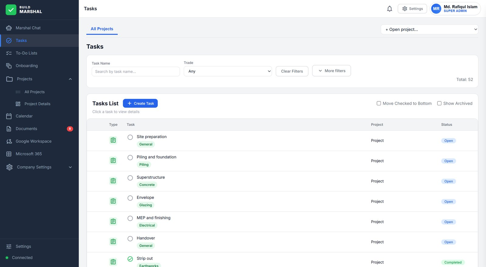

Cited answers
Ask anything about the documents. The reply carries the document, the page and the match, one click from the page itself.
Construction project intelligence
Marshal reads the specification, the drawing register, the programme and the cost plan — then answers with the exact page it came from, and how sure it is. When it needs something it was never told, it asks you instead of inventing it.

0
answers without a page you can open and check
0
blanks filled with a guess — it asks instead
11
kinds of record raised from one plain sentence
591
automated checks holding those rules in place
A-01 / Capabilities
One assistant, the whole project
Specifications, drawings, programmes, cost plans, site instructions, mail and diary — read once, kept in context, and answerable in plain language.
Ask anything about the documents. The reply carries the document, the page and the match, one click from the page itself.
Projects, tasks, people, costs and orders opened by asking — with every mandatory field collected before the form appears.
A programme or cost plan becomes a reviewable draft of projects, tasks and costs. Nothing commits until you approve it.
Progress and spend read off the live programme, with early flags on what is slipping and what is about to.
Drafting, scheduling and document import across the workspaces you already use — each acting only on an explicit confirmation.
Each company's documents, index, projects and settings are held apart structurally — not by a setting somebody can switch off.
A-02 / What you ask
Answers with their source
Ask about the response period, the concrete schedule, the current revision of a drawing. Back comes the answer with the document, the page and how sure it is. Because the pages are read as pages, a schedule table or a stamped title block is found the same way a paragraph is.
Slabs at 3500 psi, piles at 4000 psi — two numbers one clause apart. When the documents do not settle a question, Marshal says so and names what it does hold, rather than composing something plausible.
A-03 / What you tell it

Records without the form-filling
Say what you want made — a project, a task, a person, a cost, a purchase order. Marshal works out what the record actually requires, asks for each missing piece one question at a time, and keeps what you have already told it. The form opens once, complete, for you to check and confirm.
A person, trade or category that does not exist is never accepted, and never quietly corrected to the nearest match.
A-04 / Getting started
From paper to a running project
Upload the programme, the team list, the cost plan. Marshal reads them into a draft of projects, tasks, people and costs that you review, correct and approve line by line. Nothing reaches the live project until you commit it — and re-running the same documents does not duplicate what is already there.

A-05 / The difference
Why this one is built differently
Construction documents are contractual. An assistant that confuses two concrete strengths does not look wrong — it looks certain. Then the floor comes out and the claim comes in. That risk is what the whole system is shaped around.
A general-purpose assistant
Marshal
A Level-4 capstone project: evidence-cited retrieval and schema-bound record creation, built and tested end to end for the way construction projects actually run.